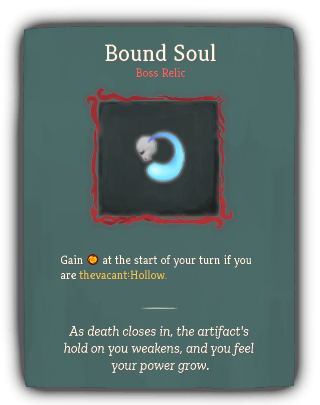

| Name |
Image |
Tier |
Pool |
Description |
Flavor |
| Brass Goblet |
 |
Starter |
Vacant_color |
At the start of combat, gain 2 thevacant:Void. |
An ancient artifact with dark power. |
| Locket Piece |
|
Common |
Vacant_color |
After a card thevacant:Ricochets, gain 4 Block. |
A reminder of a life lost. Or at least, a piece of one. |
| Deathbell |
 |
Uncommon |
Vacant_color |
At the start of each combat, if you are thevacant:Hollow, gain 10 Temporary_HP. |
The scent invokes a feeling of dread. |
| Tombstone |
 |
Rare |
Vacant_color |
At the start of combat, after you draw, thevacant:Mill your draw pile. |
Just as we all go to the grave eventually, all cards go to the discard pile eventually. |
| Bound Soul |
 |
Boss |
Vacant_color |
Gain [E] at the start of your turn if you are thevacant:Hollow. |
As death closes in, the artifact's hold on you weakens, and you feel your power grow. |
| Overflowing Goblet |
 |
Boss |
Vacant_color |
Replaces Brass Goblet. At the start of combat, gain 2 Artifact. |
An ancient artifact, now overflowing with dark power. |
| Polishing Rag |
 |
Boss |
Vacant_color |
thevacant:Gems gain 1 size when thevacant:Mined. |
Shiny gems are more powerful, everyone knows this. |
| Cracked Crystal Ball |
 |
Shop |
Vacant_color |
Exhausted cards return to your draw pile after 2 turns. |
Sometimes magic leaking into the world is more powerful than when it is contained. |


{kind=link}